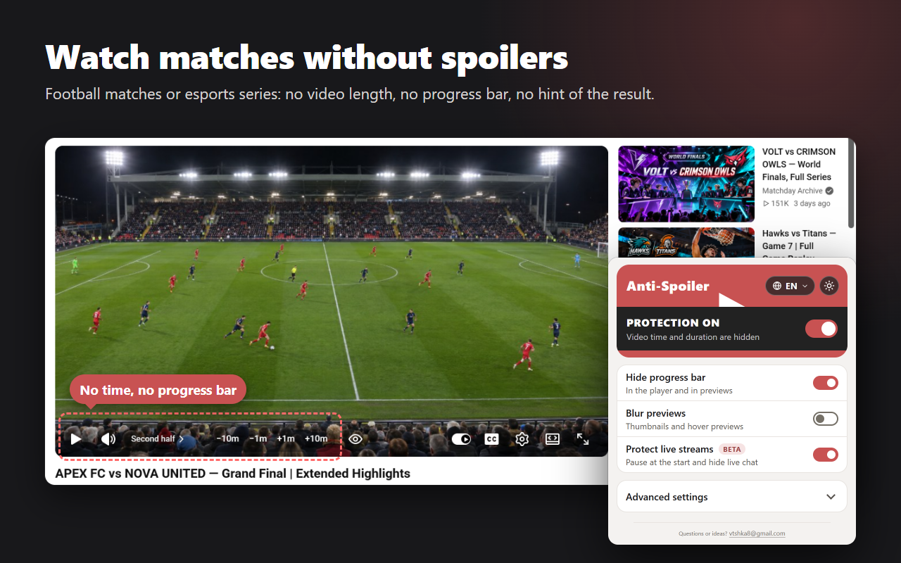
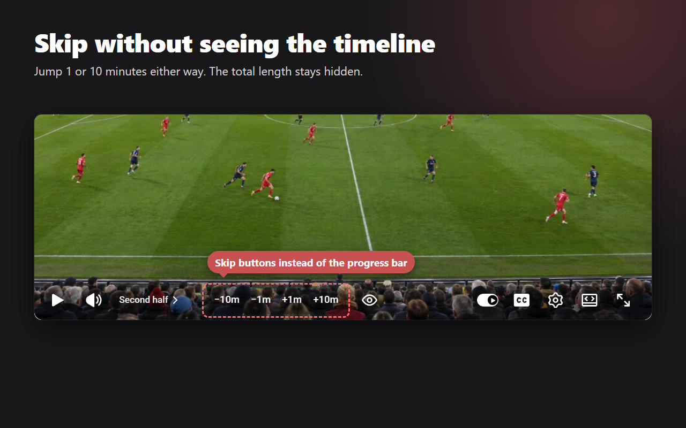
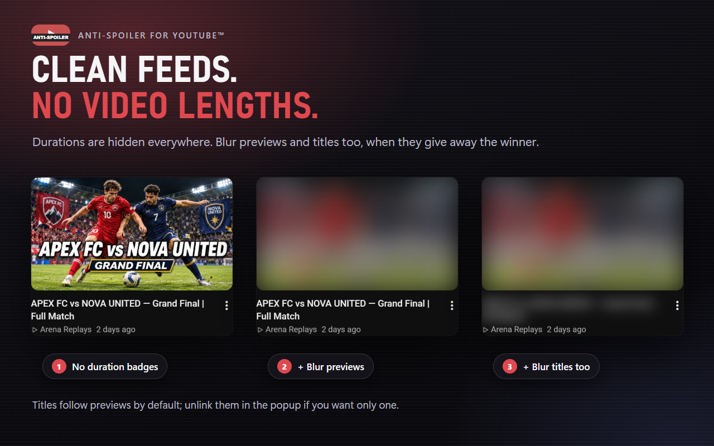
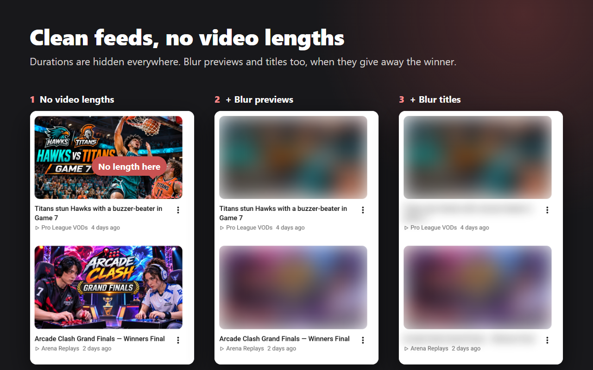
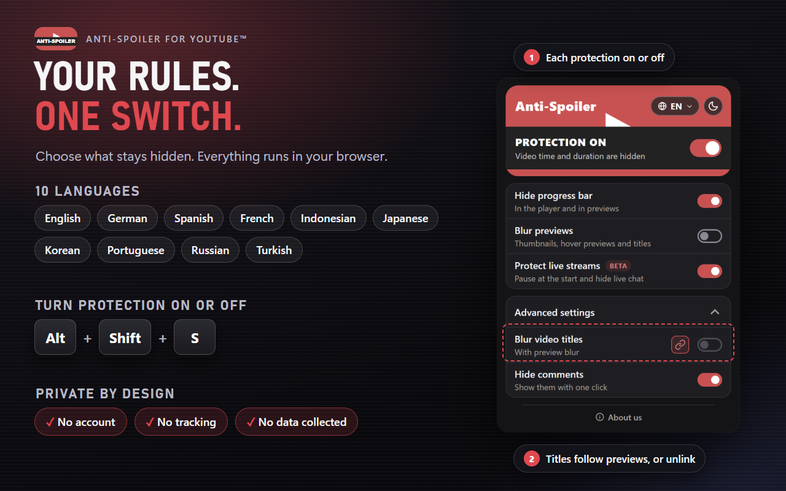

Watch matches without spoilers
Durations disappear from thumbnails, search results and recommendations. Player time, chapter timestamps and transcript times stay hidden, too. Comments are covered until you choose to show them.

For sports and esports replays, VODs and streams
Keep match results a surprise: hide video length and the progress bar.
Add to ChromeProtection is on by default. Preview and title blur are optional.
Durations disappear from thumbnails, search results and recommendations. Player time, chapter timestamps and transcript times stay hidden, too. Comments are covered until you choose to show them.

With the progress bar hidden, use buttons to move back or forward 10 seconds, 1 minute or 10 minutes. Your playback position stays out of view. Skip buttons require a video or stream that allows seeking.

The player is covered and muted while you choose “Start from beginning” or “Continue live”. The beginning is the earliest available rewind point. If seeking is disabled, you can only continue live. Live chat stays behind “Show comments”.

“Blur previews” covers thumbnails, end screens and timeline preview frames. “Blur video titles” blurs titles in lists and on the video page, including the browser tab. Both settings are off by default.

Already know the result? Use the eye button in the player or Alt+Shift+V. Other videos stay protected. Use the same control to cover it again; timestamp links in descriptions and comments stay hidden.

chrome://extensions/shortcuts.The popup and in-page buttons support English, Russian, Spanish, Portuguese (Brazil), German, French, Japanese, Korean, Indonesian and Turkish.
The extension has no analytics and makes no requests to external services. Its only extension permission is storage, with page access limited to https://www.youtube.com/*.
Protection settings use Chrome storage and can sync when Chrome Sync is enabled. Language and theme choices stay on your device. The page's local storage keeps your two blur choices so the blur applies at once, and the tab's session storage remembers which video you uncovered until you leave it or close the tab.
Install Anti-Spoiler for YouTube™ from the Chrome Web Store. Protection is on by default. Video time and duration stay hidden while protection is on, unless you uncover the current video.
Yes. With the progress bar hidden, player buttons let you move back or forward by 10 seconds, 1 minute or 10 minutes without displaying your position. They are unavailable on live streams that do not allow seeking.
Yes. Turn on "Blur previews" in the popup for thumbnails, previews and end screens. Under "Advanced settings", turn on "Blur video titles" for titles, including the open video and browser tab. Both settings are off by default.
Comments are covered by default, including under videos, in the comments panel and on Shorts. Live-stream protection also covers live chat. Use "Show comments" to reveal either.
The Beta live-stream guard covers and mutes the player until you choose "Start from beginning" or "Continue live". Starting from the beginning means the earliest point still available for rewinding. It cannot recover parts outside that window or rewind a stream that disables seeking.
Yes. While protection is on, click the eye button in the player or press Alt+Shift+V. The current video is uncovered while other videos stay protected. Repeat the action to cover it again. Timestamp links in descriptions and comments stay hidden.
Protection, time hiding, "Hide progress bar", "Hide comments" and "Protect live streams" (Beta) are on by default. "Blur previews" and "Blur video titles" are off by default. Time hiding stays active whenever protection is on, except for a video you uncover.
The extension has no analytics and makes no requests to external services. Protection runs locally. Settings use Chrome storage and can sync when Chrome Sync is enabled; language and theme choices stay on your device. The page's local storage keeps your two blur choices so the blur applies at once, and the tab's session storage remembers which video you uncovered until you leave it or close the tab.
Alt+Shift+S toggles protection. Alt+Shift+V uncovers or covers the current video while protection is on. You can change these shortcuts at chrome://extensions/shortcuts. The protection on/off switch is also available in the extension popup.
The popup and in-page buttons support English, Russian, Spanish, Portuguese (Brazil), German, French, Japanese, Korean, Indonesian and Turkish. Choose a language in the popup.